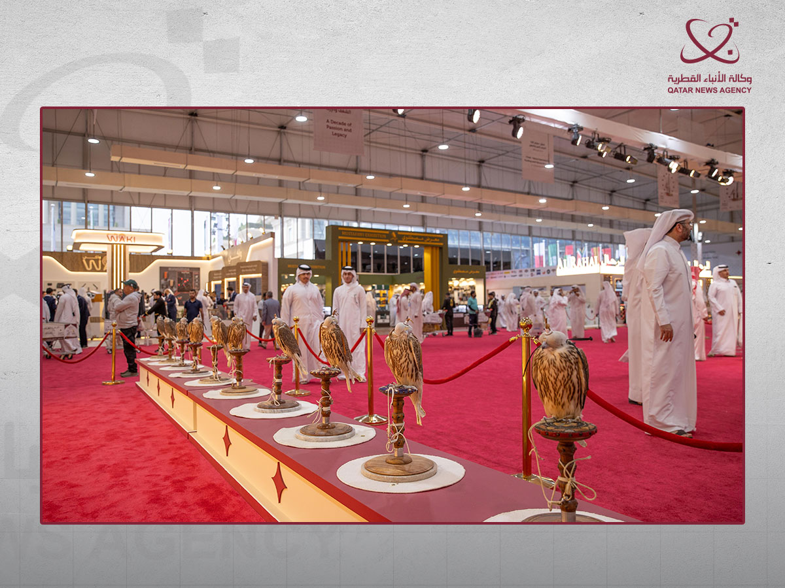

الدوحة – صيد
شاهد ألبوم «سهيل 2026» بالصور: الصقور والزوار ووجوه المعرض ←
اختتم معرض كتارا الدولي للصيد والصقور «سهيل 2026» فعاليات نسخته العاشرة في الدوحة، بعد خمسة أيام شهدت حضورًا تجاوز 80 ألف زائر ومشاركة واسعة من الشركات والجهات المتخصصة، ليكمل المعرض عقده الأول وقد تحول إلى واحد من أبرز المواعيد الإقليمية لهواة الصيد والصقارة والمقناص والرحلات البرية.
وأقيمت دورة هذا العام، من 8 إلى 12 أيلول/سبتمبر، تحت شعار «عقد من الشغف والإرث». وعند افتتاحها، ضمت قائمة العارضين 158 جهة وشركة من 15 دولة، تعمل في مجالات تمتد من الصقور ومستلزماتها وأدوات الصيد إلى التخييم وتجهيز المركبات والتقنيات الحديثة والخدمات اللوجستية.
ولم تعد هوية «سهيل» تقتصر على كونه معرضًا لبيع مستلزمات الصيد. فالنسخة العاشرة عرضت أكثر من 20 ابتكارًا واختراعًا مرتبطًا بالصيد والقنص والرحلات، في مؤشر على تطور سوق متخصصة تتداخل فيها التقنيات الحديثة مع الممارسات التراثية.
الصقور في قلب الحدث
بقي مزاد سهيل للصقور واحدًا من أكثر محطات المعرض جذبًا للجمهور والصقارين، مع عرض مجموعة من الصقور المميزة والنادرة ومنافسة على اقتنائها. ووصف نائب رئيس اللجنة العليا المنظمة محمد بن عبداللطيف المسند المزاد بأنه من أبرز فعاليات «سهيل»، فيما أشار إلى تزامن دورة هذا العام مع انطلاق موسم جديد للصقارة والمقناص.
المصدر: قنا
وقدمت أجنحة المعرض صورة واسعة عن عالم الصيد المعاصر: صقور ومستلزمات تدريبها والعناية بها، معدات للرحلات والكشتات، تجهيزات للسيارات، منتجات للصيادين والصقارين، وحرف تقليدية وفنون مستوحاة من الصحراء والصيد.
وفي الوقت نفسه، حضر البعد البيئي في عدد من المشاركات والتجارب، بما فيها الصيد المستدام، إلى جانب مشاركة جهات مثل إدارة الآثار في متاحف قطر التي استثمرت وجود مرتادي البر للتوعية بحماية المواقع الأثرية أثناء ممارسة الهوايات البرية.
من الهواية إلى سوق متخصصة
وتشير أرقام «سهيل» إلى اتساع الاقتصاد المحيط بالصيد والصقارة في المنطقة. وتحدث مدير المعرض عبدالعزيز البوهاشم السيد عن حركة شرائية قوية في الأجنحة، معتبرًا أن الهدف لم يعد مجرد إقامة معرض تجاري، بل ترسيخ ملتقى متخصص يجمع أصحاب الهواية والشركات والمهتمين من دول مختلفة.

المصدر: قنا
وهذا الاتساع يظهر في طبيعة المشاركين أنفسهم. فإلى جانب الشركات المتخصصة، شاركت مؤسسات تقدم خدمات للشحن والتخزين، من بينها بريد قطر، فيما ضم المعرض قطاعات تجهيز السيارات والتخييم والخدمات المرتبطة بالصقور والصيد. كما حظيت الدورة بدعم صندوق «دعم» للعام التاسع على التوالي.
وفي ختام المعرض، فاز DTS بجائزة أجمل جناح، فيما ذهبت جائزة أجمل كراج إلى «المحرك الصحراوي»، إلى جانب مسابقات متخصصة في صناعة براقع الصقور وغيرها من العناصر المرتبطة بثقافة الصقارة.
الإعلام شريك في «سهيل»
ولفت في ختام الدورة تأكيد ملكة محمد آل شريم، عضو وأمين سر اللجنة العليا المنظمة، أهمية وسائل الإعلام المحلية والعربية والدولية في نقل صورة المعرض، واعتبار الإعلام شريكًا استراتيجيًا في تعزيز حضور «سهيل» والتعريف بالموروث القطري عالميًا.
وبعد عشر دورات، تبدو الطريق مفتوحة أمام مرحلة جديدة للمعرض. فقد بدأت اللجنة العليا بالفعل التفكير في النسخة المقبلة، مع توجه لمواصلة تطوير الحدث وترسيخ موقعه ملتقى دوليًا للصقارين وهواة الصيد والمقناص والشركات المتخصصة.
وبذلك يختتم «سهيل 2026» عقده الأول، لكن الأرقام والاتساع الذي شهده هذا العام يوحيان بأن السنوات العشر الأولى قد تكون مجرد البداية.
المصدر: وكالة الأنباء القطرية «قنا».